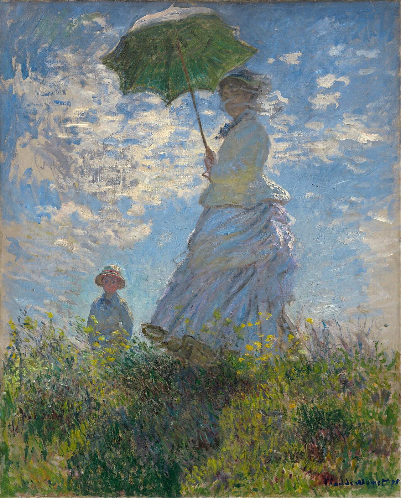

撑阳伞的女人——莫奈夫人和她的儿子 Woman with a Parasol – Madame Monet and Her Son
莫奈 · 1875年 · 华盛顿国家美术馆
Claude Monet · 1875 · National Gallery of Art, Washington
图片：华盛顿国家美术馆开放资源，公有领域 / Image: National Gallery of Art Open Access, public domain

发现 · Discover
卡米耶和让 Camille and Jean
画中是莫奈的妻子卡米耶和他们的儿子让，正走在阿让特伊的一片草坡上。
This is Monet's wife, Camille, and their son, Jean, walking on a grassy slope in Argenteuil.
背后的阳光 Sunlight from behind
阳光从她身后照过来，把阳伞顶部和她身后飘动的布照得发白。
Sunlight shines from behind her, whitening the top of the parasol and the cloth flowing at her back.
野花的颜色 The colour of wildflowers
她身前，被下面野花的颜色映上了一层黄色。
Below, the wildflowers cast a touch of yellow onto her front.
风 The wind
风好像在她周围打转，把面纱吹向右边，她面前的草却朝相反的方向吹。
The wind seems to swirl around her, blowing her veil to the right, while the grass in front of her blows the other way.
小让 Little Jean
儿子让站在稍远处，似乎完全没有感觉到风。
Jean stands a little further back and doesn't seem to feel the wind at all.
几个小时 A few hours
这幅画是在户外画的，很可能一次就画完了，只用了几个小时。
It was painted outdoors, probably in a single session lasting a few hours.
故事 · The story
ACT I 第一幕 · 阿让特伊 Argenteuil
1871年底，在马奈的帮助下，莫奈搬到了巴黎郊区的阿让特伊。在这里，他度过了创作最丰富的时期之一。
At the end of 1871, with Manet's help, Monet moved to Argenteuil, a suburb of Paris. It began one of the most productive periods of his career.
1875年 · 华盛顿国家美术馆 / 1875 · National Gallery of Art, Washington
ACT II 第二幕 · 草坡上的一刻 A moment on the slope
1875年，他在户外画下了妻子和儿子，很可能只用了几个小时。他想抓住的，是风吹过、阳光闪过的那一刻。
In 1875, he painted his wife and son outdoors, probably in just a few hours. What he wanted to catch was the moment the wind blew and the sunlight flashed.
1875年 · 华盛顿国家美术馆 / 1875 · National Gallery of Art, Washington
ACT III 第三幕 · 像画风景一样画人 Painting a person like a landscape
他画卡米耶的脸，就像画周围的草和云一样自由，完全不同于当时学院派肖像的规矩。
He painted Camille's face as freely as the grass and clouds around her, quite unlike the formal rules of academic portraiture at the time.
1875年 · 华盛顿国家美术馆 / 1875 · National Gallery of Art, Washington
风吹过的一刻。 The moment the wind blew.
作品档案 · Artwork record
| 画家（生卒年） · Artist (dates) | 克劳德·莫奈（1840–1926） / Claude Monet (1840–1926) |
|---|---|
| 画名 · Title | 撑阳伞的女人——莫奈夫人和她的儿子 / Woman with a Parasol – Madame Monet and Her Son |
| 年份 · Date | 1875年 / 1875 |
| 材质 · Medium | 布面油画 / Oil on canvas |
| 收藏地 · Collection | 华盛顿国家美术馆 / National Gallery of Art, Washington |
关于画家 · About the artist
克劳德·莫奈（1840–1926），法国印象派最重要的风景画家。他生于巴黎，在勒阿弗尔长大。普法战争期间（1870–71）曾移居伦敦。1883年起住在吉维尼，晚年专注于在不同光线下反复画同一主题，比如干草堆、鲁昂大教堂和他自己的花园。
Claude Monet (1840–1926) was the leading French Impressionist landscape painter. Born in Paris, he grew up in Le Havre and moved to London during the Franco-Prussian War (1870–71). From 1883 he lived in Giverny, where he painted series of a single subject under different light: haystacks, Rouen Cathedral and his own garden.